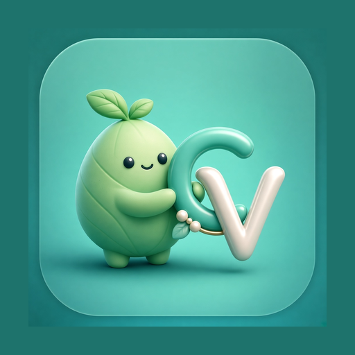

Calorie Vision
Нет интернета
Приложение сейчас без сети. Это не страница сайта — облачный дневник и вход недоступны офлайн.
Что можно сделать: открыть локальный черновик на устройстве или подождать сеть и повторить вход.

Calorie Vision
Приложение сейчас без сети. Это не страница сайта — облачный дневник и вход недоступны офлайн.
Что можно сделать: открыть локальный черновик на устройстве или подождать сеть и повторить вход.